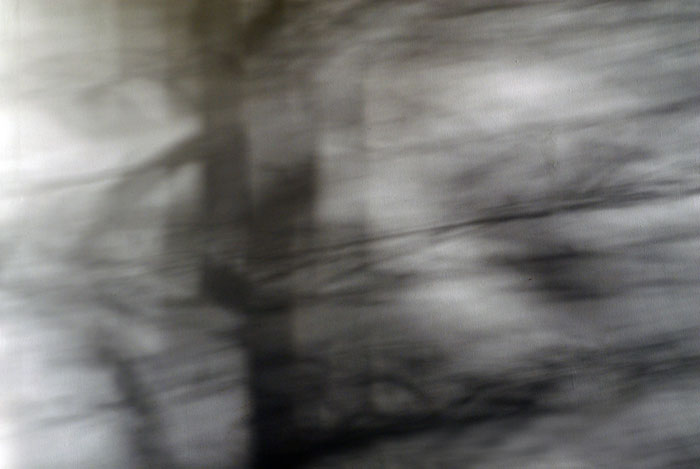

	<div id="oneCol" class="row">
    <div class="large-12 columns">
        <div class="medium-10 medium-offset-1 end columns">
          <h3>Response to Transition</h3>
			<p>The community side of this project  is described in more detail below.<br />
          I initiated this project because of  my experience of watching my brother move from life towards death due to  illness. My images were a visual poem about my grieving process;
          the whole project was dedicated to  his memory.  Here are 6 of 25 images which were  exhibited as a visual poem.</p>
		</div>
		<div class="center">
        <a href="response002.html" title="View next Response to Transition photograph"></a>
        </div>

          <div class="medium-10 medium-offset-1 end columns">

        <p>Together with artists, <a href="../../links/index.html">Claire Christie Sadler</a> and <a href="../../links/index.html">Wren Hughes</a>,  we created a project which involved community members and ourselves responding to  the theme of &#8216;transition&#8217;. We ran art workshops during November and December 2007.
      June 10-28 we had an Exhibition at <strong><a href="../../links/index.html">The North Wall Gallery</a></strong>, South Parade, Oxford, showing photography, installations, sculpture and drawings.  This project was funded by the <a href="../../links/index.html">Arts Council</a>, England and <a href="../../links/index.html">Oxford City Council</a> and was supported by <a href="../../links/index.html">FUSION</a> an Oxford Community Arts Agency. My personal work has since been re-exhibited , West Oxfordshire Arts,  Bampton Gallery July 2009.</p>
      <span class="links"><a href="response002.html">next</a></span>
      </div>
	</div>
</div>

